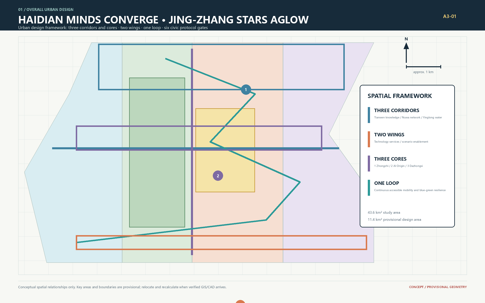
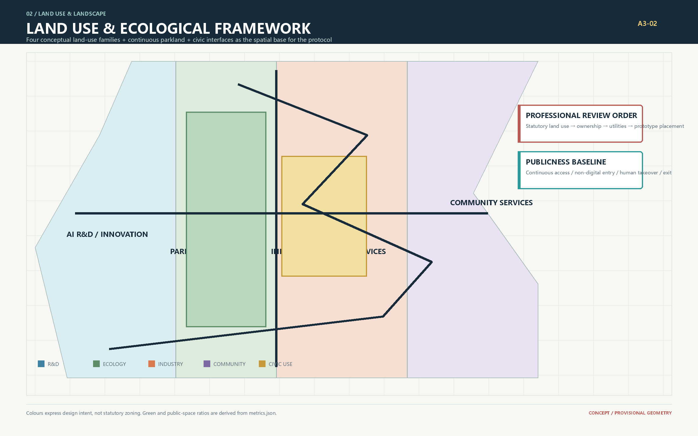
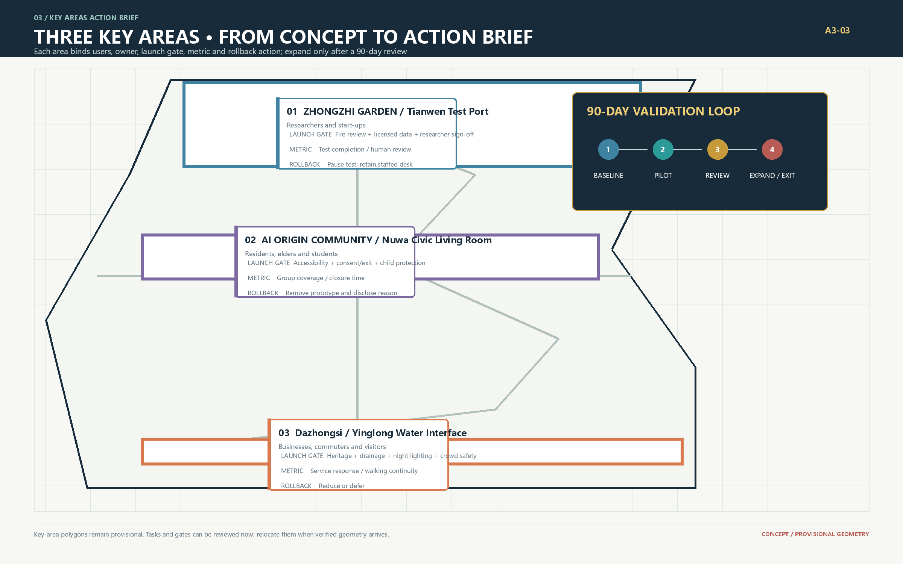
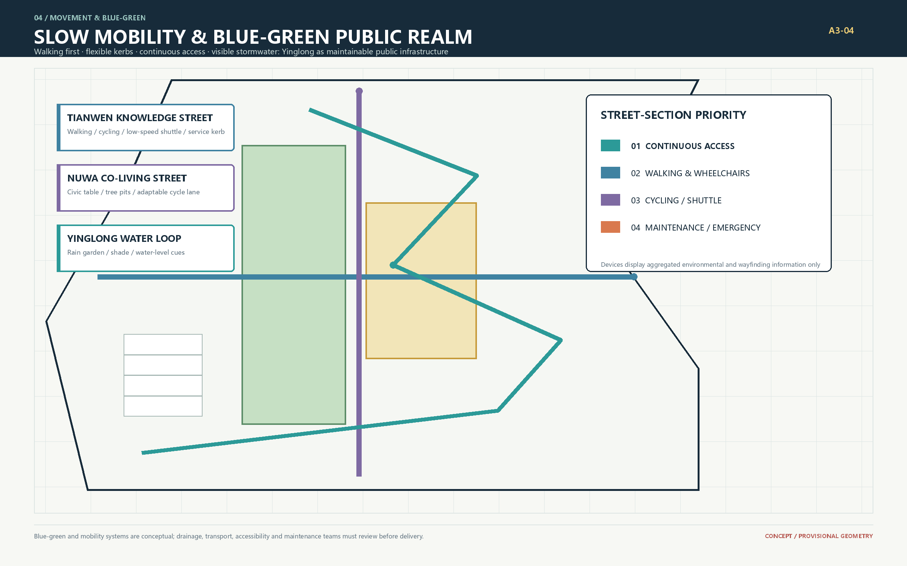
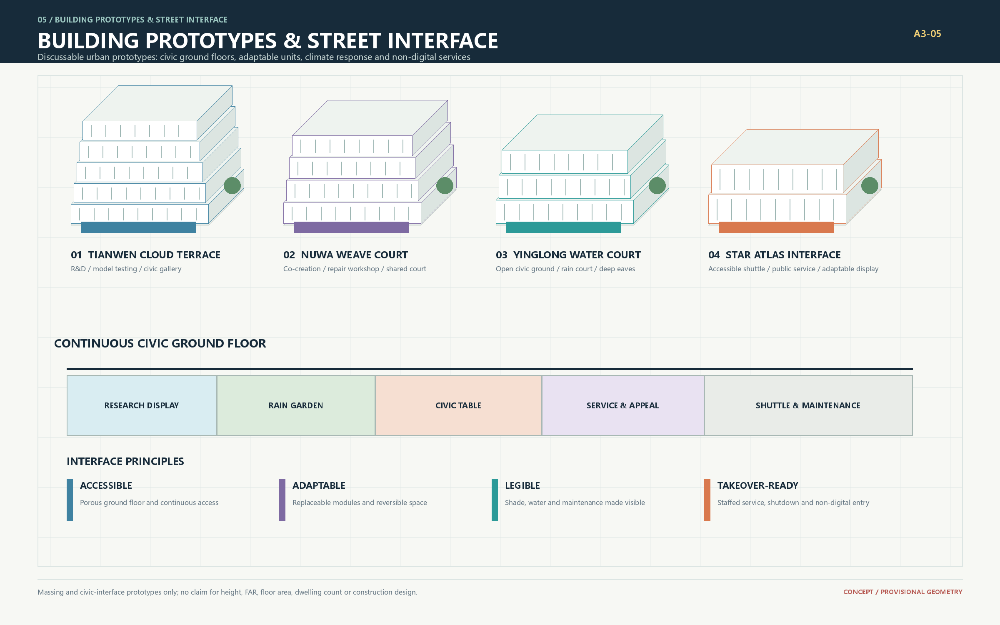
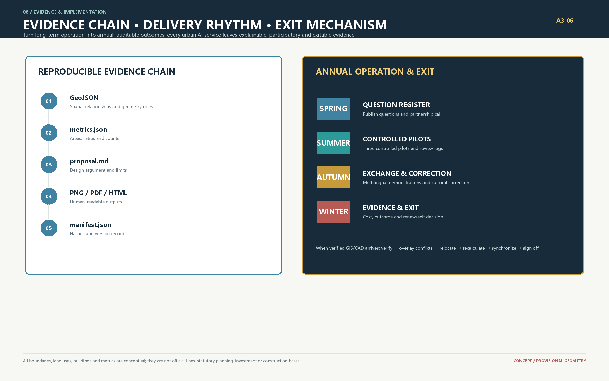

Land · Space
Movable prototypes in provisional geometry, relocated after official GIS/CAD verification.
The century-old Jing-Zhang legacy meets Haidian's innovation culture: Tianwen makes knowledge explainable, Nuwa makes collaboration participatory, and Yinglong makes climate resilience tangible. The structure remains three corridors, three cores, two wings, and one loop. The Tiangong Civic Protocol gives every AI-enabled public service a purpose, accountable owner, public evidence, expiry review, and exit path.

The protocol is an original implementation discipline, not statutory planning or a government commitment. A scenario that fails any gate cannot expand.
Movable prototypes in provisional geometry, relocated after official GIS/CAD verification.
Public questions connect research, startups, services, and resident knowledge.
Staged access records permission, ownership, expiry, and shutdown.
Ninety-day pilots test safety, inclusion, maintenance, and reversibility.
Interfaces with Zhongguancun, Beiwei Community, Future Science City, Huairou Science City, Beijing E-Town, and Beijing-Tianjin-Hebei.
Tianwen, Nuwa, and Yinglong organize innovation, community, industry, and blue-green systems.
Ninety-day pilots test each prototype before any expansion.

Model evaluation bench, edge demonstration, quiet knowledge garden.
Civic workshop, AI-literacy exhibit, demountable public table.
Product validation, Jing-Zhang culture, rainwater and low-carbon mobility.

Research, validation, talent community, public experience, and resilience form a loop; land use remains conceptual.
Walking and wheelchairs, cycling, booked low-speed shuttles, maintenance, then emergency access.
Pickup, logistics, rain pause, and events switch by time without blocking accessibility.
Rain gardens, shade, microclimate notices, and slow mobility become maintainable infrastructure.

Research, evaluation, and public gallery.
Shared court, live-work, and repair spaces.
Lifted public floor, rain garden, deep eaves.
Accessible transfer, service, and exhibitions.
Renewal sequence: inventory → maintain → program infill → retrofit → open interface → conditional replacement. No parcel-level demolition, FAR, or height claim precedes professional surveys.

Safe evaluation, explainable evidence, and a staffed booking desk.
Validation, compliance, market translation, and a human service window.
Plain language, paper access, and a working opt-out path.
Teacher-led learning, safeguards, and source review.
Continuous accessible routes and visible staffed help.
Multilingual context, open contribution, and correction closure.
Explainable-AI gallery and Star Atlas contributor wall.
Public protocol reading and resident-developer collaboration.
Jing-Zhang culture, climate sensing, and low-carbon mobility.
Component library: protocol sign, demountable table, staffed desk, low-glare guidance, rainwater sensor node, and contribution archive. Recognition is human-reviewed, traceable, and never a guaranteed award.
A verified timeline conveys mobility, engineering, and civic memory without imitating historic forms.
Open research, founder support, and problem collaboration become spatial interfaces.
Versions, evidence, correction, and exit create participatory contemporary culture.
Publish memory and urban problem calls.
Developer residency and three controlled prototypes.
Multilingual demos, exchange, and cultural correction.
Publish cost, benefit, and renew-or-exit decisions.
Official base, site audit, conflict register, public baseline.
Three 90-day pilots, accessibility audit, ethics and maintenance manuals.
Continuous corridor segments, shared interfaces, annual evaluation.
Evidence determines expansion, adjustment, or exit.

Official GIS/CAD is not yet available. When received, verify source and coordinates, overlay conflicts, relocate key-area tasks, recalculate metrics, update every artifact, and obtain professional sign-off. Official geometry is never altered to fit the concept.
Sources: official call, site package, agent taskbook, repository source registry, and local standards snapshots.
Assumptions: provisional boundaries; controls, ownership, buildings, utilities, ecology, heritage, and KPI baselines pending.
Check status: structured data, figures, bilingual views, and offline artifacts rebuilt for v1.2; exact areas remain provisional.
Public gates: continuous accessibility, non-digital access, staffed service, minimum data, opt-out, and appeal.